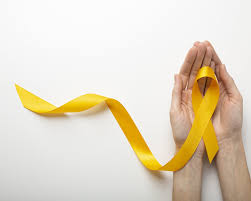

Setembro Amarelo
Prevenção ao Suicídio
O Setembro Amarelo é mais do que uma campanha; é um movimento contínuo que busca quebrar o silêncio em torno do suicídio, abordando-o como um grave problema de saúde pública que, em grande parte, é prevenível. Adotando uma perspectiva compassiva e científica, entendemos que a ideação suicida é frequentemente o desfecho de um sofrimento psíquico intenso, geralmente ligado a transtornos mentais tratáveis, como a depressão, ansiedade e transtorno bipolar.

Conscientização
A conscientização reside em desmistificar a crença de que falar sobre o suicídio o incentiva. A evidência científica mostra o oposto: o diálogo responsável, empático e informativo é a principal ferramenta de prevençao.
Saiba MaisPrevençao
A prevenção eficaz começa com a capacidade de reconhecer sinais de alerta em nós mesmos e nas pessoas ao nosso redor. É fundamental notar que esses sinais, isolados, podem não significar risco, mas sua combinação e persistência...
Saiba Mais
Acolhimento
O acolhimento é o passo final e o mais humano. Se você identificar os sinais, sua reação deve ser pautada na empatia e no não-julgamento. Ao falar, reconhecer e acolher, tornamos a prevenção do suicídio uma responsabilidade...
Saiba Maisvocê não está sozinho
Oque é o laço amarelo?
O Laço amarelo é o símbolo internacional da prevençao ao suicídio, representando esperança, solidariedade e apoio às pessoas que enfrentam momentos de crise emocional. Sua cor vibrante simboliza a luz que pode iluminar os momentos mais sombrios da vida humana. A representatividade do laço amarelo transcende fronteiras culturais, unindo comunidades em torno do compromisso coletivo de valorizar cada vida e promover o bem-estar mental como prioridade social.
Psiquiatra Juliano Nogara
Psiquiatra integrante do corpo clínico do Hospital São Vicente de Paulo de Passo Fundo (RS), Juliano Nogara acredita que pensar sobre os transtornos mentais é prevenir o suicídio. “O grande objetivo do Setembro Amarelo é lembrar que devemos cuidar da saúde mental e avaliar se está tudo bem consigo. A melhor forma de fazer isso é procurar um profissional de saúde mental, um médico psiquiatra e um psicólogo”, diz.
Saiba MaisPsicóloga Gabriela Pinheiro
Para Gabriela Pinheiro Reis, psicóloga da Fundação São Francisco Xavier, a campanha é fundamental para a conscientização e a promoção da informação correta. “E, principalmente, incentivar pessoas que estejam passando por momentos difíceis a buscarem ajuda”, comenta.
Saiba MaisUma mensagem simples, mas poderosa, que refina o valor intrínseco de cada existência e a importância de buscar ajuda nos momentos difíceis.
Saiba MaisLembre que sempre há pessoas dispostas a escutar e apoiar, seja família, amigos ou profissionais especializados em saúde mental.
Saiba MaisReconhecer que buscar apoio profissional demonstra força e maturidade emocional, não é fraqueza.
Saiba Maisalgum texto aqui
Prevenção ao Suícidio
Educar a sociedade sobre os fatores de risco e sinais de alerta relacionados ao comportamento suicida.
Educar a sociedade sobre os fatores de risco e sinais de alerta relacionados ao comportamento suicida.